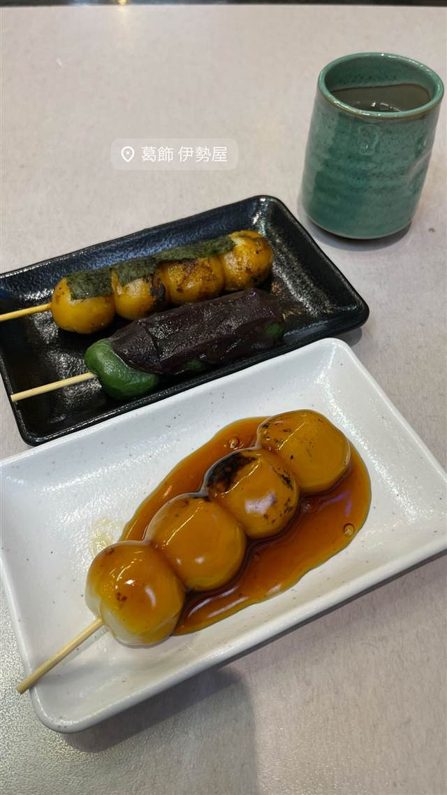
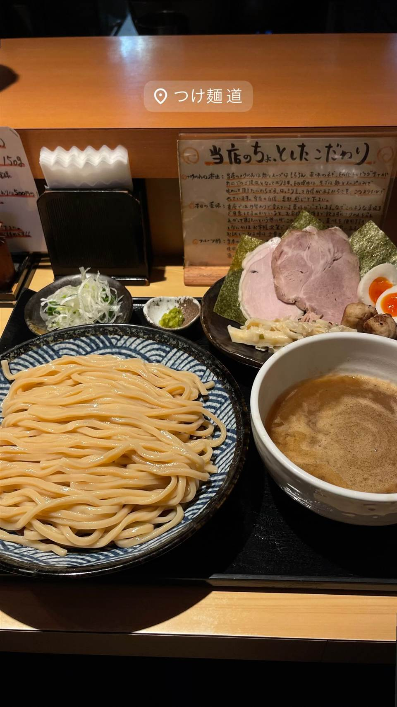
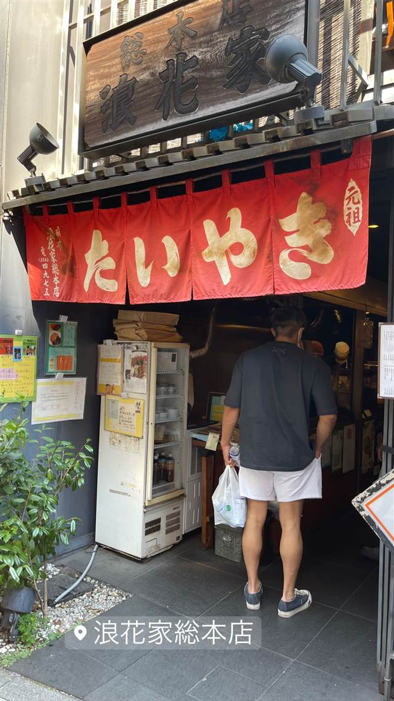
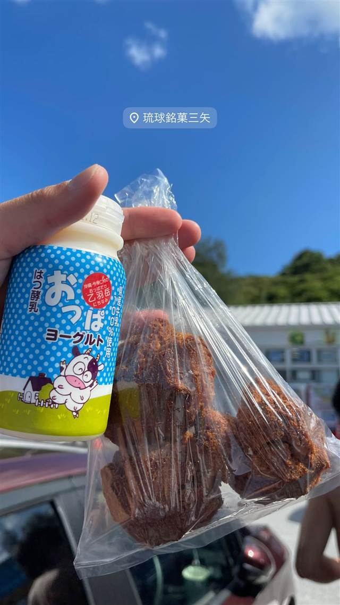
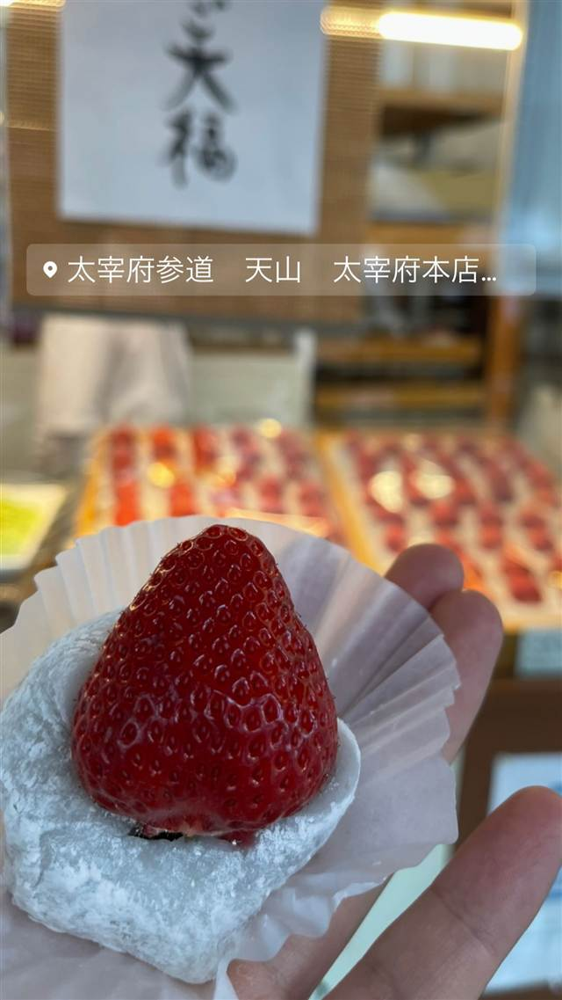

スイーツ · 和菓子 · 亀有
葛飾伊勢屋 亀有本店
こち亀公認の「両さんどら焼」を売る昭和40年創業の老舗
葛飾 伊勢屋
1965年、江東区の「深川伊勢屋」で修業した初代が亀有で開いた老舗和菓子店。名物の焼きだんごや豆大福のほか、「こち亀」公認の「両さんどら焼」でも知られる、亀有を代表する土産処。
TRIVIA
豆知識
- 漫画「こち亀」公認の「両さんどら焼」を販売する亀有土産の定番
- 2025年に創業60周年を迎えた
REVIEWS
世間の評判
3.51食べログ
もちもち焼き団子と下町の雰囲気
- もちもちで大玉の焼き団子を甘すぎず美味しいと評価する声が多い
- 豆大福や草大福など昔ながらの和菓子のおいしさを評価する声もある
- 昔ながらの下町の雰囲気と長く親しまれてきた老舗感を評価する声が多い
- ラーメンやカレーなどの軽食も提供する食堂機能を評価する声がある
食べログ 口コミ251件
| 創業 | 1965年（昭和40年）創業 |
|---|---|
| 系譜 | 江東区の「深川伊勢屋」で修業した初代・佐藤運助氏が独立して開業 |
| 看板 | 焼きだんご、豆大福、塩大福、両さんどら焼 |
| こだわり | 開店当初はだんご・大福・まんじゅうがどれでも2個25円だったが、大きく美味しい焼だんごや豆大福が評判に |
| どこから | 23区の外れ・近郊 |
| 営業時間 | 月〜日 08:30-19:30 |
| 予算 | 昼 ～¥999 夜 ～¥999 |
| 定休日 | 不定休(月1回火曜) |
| 場所 | 亀有 東京都葛飾区亀有 |
| メモ | 店頭でおにぎり・いなりずしなど約50種類の商品を販売 |
食べたもの：団子
NEARBY
近い店・同じ系統の店
-

★ つけ麺 亀有 つけ麺 道 魚粉不使用、乾物を二度濾した雑味のない魚介豚骨つけ麺 昼 ¥1,000～¥1,999 夜 ¥1,000～¥1,999 -
 和菓子 恵比寿
たいやき ひいらぎ
1個焼くのに30分かける東京五大たい焼きの一つ
昼 ～¥999 夜 ～¥999
和菓子 恵比寿
たいやき ひいらぎ
1個焼くのに30分かける東京五大たい焼きの一つ
昼 ～¥999 夜 ～¥999
-

和菓子 麻布十番 浪花家総本店 たい焼き発祥ともいわれ、100年以上一丁焼きを守り続ける最古参の店 -
 和菓子 箱根湯本駅
菊川商店
製造終了した希少な専用焼き機を2台所有し焼きたてまんじゅうを提供
昼 ～¥999 夜 ～¥999
和菓子 箱根湯本駅
菊川商店
製造終了した希少な専用焼き機を2台所有し焼きたてまんじゅうを提供
昼 ～¥999 夜 ～¥999
-

和菓子 許田 琉球銘菓 三矢本舗 道の駅許田店 3人兄弟の屋号を掲げるサーターアンダギー専門店 -

和菓子 西鉄太宰府駅 太宰府参道 天山 太宰府本店 太宰府政庁跡出土の鬼瓦をかたどった最中種を使う鬼瓦最中が看板 昼 ～¥999